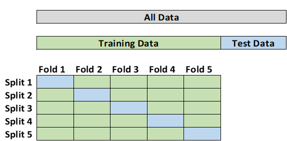

# Introduction
Cross-validation is defined as a method "of estimating our model error using a single observed dataset by separating data used for training from the data used for model selection and final accuracy." (Lau, 2020) Cross-validation is a "conceptually simple technique, easy to apply and requires no specific knowledge about the details of the model." (Abu-Mostafa, 2012) In other words, in the process of cross-validation, the original data is randomly divided into several subsets. The machine learning model trains on all subsets, except one. After training, the model is tested on the remaining subset.
In many instances, multiple rounds of cross-validation are performed using different subsets, and their results are averaged to determine which model is a good predictor. (Shaffer, 1993)
# Overfitting
Overfitting is a "phenomenon where fitting the observed facts (data) well no longer indicates that we will get a decent out-of-sample error, and may actually lead to the opposite effect." (Abu-Mostafa, 2012) Overfitting occurs when noise in the data "has misled the data." (Abu-Mostafa, 2012) “Noise” in this context means data points which do not represent the true properties of the data, but only exist due to random chance. (Lever, 2016) Overfitted models “tend to memorize all the data, including unavoidable noise on the training set, instead of learning the discipline hidden behind the data.” (Ying, 2019)
Another cause of overfitting is “when the training set is too small or is not representative of the data as a whole, the noises have a greater chance of being learned, and later act as a basis of predictions.” (Ying, 2019) Overfitted models “tend to memorize all the data, including unavoidable noise on the training set, instead of learning the discipline hidden behind the data.” (Ying, 2019)
Additionally, there is a tradeoff between bias and variance that one must consider. “When a model is too complex, it overfits the data. This happens because the model works too hard to find patterns in the training data that are just caused by random chance.” (Lau, 2020) “When a model is too simple, it underfits the data. Underfitting occurs when the true relationship between the explanatory variables and the response variable is simpler than it is.” (Lau, 2020) In the graph below, the horizontal axis is epoch, and the vertical axis is error, the blue line is the training error and the red line is the validation error. If we stop learning before the yellow triangle, it’s underfitting. If we stop after the yellow triangle, we get overfitting.

Another “cure” for overfitting is regularization. (Abu-Mostafa, 2012) Regularization means “restricting a model to avoid overfitting by shrinking the coefficient estimates to zero.” (Abu-Mostafa, 2012) When a model becomes too complicated, it tends to take all the features into consideration, even though some of them have very limited effect on the final output. (Ling, 2019) Regularization avoids overfitting by adding a penalty to the model’s loss function. (Ling, 2019) Ying proposes pruning the model “to reduce classification complexity by eliminating less meaningful, or irrelevant data.” One can implement pre-pruning by deleting conditions and rules from the model during the learning process or post-pruning by removing conditions and rules from the model that were generated during the learning phase. (Ying, 2019)
# Types of Cross-Validation
Depending on the availability and size of the data set, various cross-validation techniques can be used:
· K-fold Cross-Validation
· Stratified K-fold Cross-Validation
· Holdout method
· Leave-one-out Cross-Validation
· Leave-p-out Cross-Validation
· Monte Carlo Cross-Validation
## K-Fold Cross-Validation
In k-fold cross-validation the data is first partitioned into k equally sized segments or folds. K iterations of training and validation are performed such that within each iteration a different fold of the data is used for validation while the remaining k-1 folds are used for training. (Lau, 2020) One negative of this method is that the data needs to be stratified or rearranged in such a way as to ensure each fold is representative of the whole dataset. (Tang, 2008)

## Stratified K-Fold Cross-Validation
The stratified K-fold cross-validation method is yet another method that involves the division of data sample sets in 'k' subsets or folds. However, to “ensure that there is no biased division of data in 'k' folds, the process of stratification is conducted to rearrange the data in such a manner that each fold represents the whole data.” (Tang, 2008)
## Holdout Method
The holdout method is the simplest form of cross-validation. For this method, the test data is “held out” and not used during training. Hold-out validation avoids the overlap between training data and test data, and therefore gives a more accurate estimate of the performance of the algorithm. The downside is that this procedure does not use all the available data and the results are highly dependent on the choice for the training/test split. (Tang, 2008)

## Leave-One-Out Cross-Validation
Leave-one-out cross-validation (LOOCV) is a special case of k-fold cross-validation where k equals the number of observations in the data. In other words, in each iteration all the data except for a single observation are used for training and the model is tested on that single observation. This is a “computationally expensive procedure to perform so it is more widely used on small datasets.” (Tang, 2008)
## Leave-P-Out Cross-Validation
Leave-p-out cross-validation (LpOCV) is a method in which p number of data points are taken out from the total number of data samples represented by n. The model is trained on n-p data points and later tested on p data points. The same process is repeated for all possible combinations of p from the original sample. Finally, the results of each iteration are averaged to attain the cross-validation accuracy. (Tang, 2008)
## Monte Carlo Cross-Validation
Monte Carlo cross-validation creates multiple random splits of the data into training and testing sets. For each split, the model is fit to the training data, and predictive accuracy is assessed using the testing data. The results are then averaged over the splits. The disadvantage of this method is that some observations may never be selected in the testing subsample, whereas others may overlap, i.e., be selected more than once. (Lever 2016)

# Limitations of Cross-Validation
Currently, cross-validation is "widely accepted in data mining and machine learning community and serves as a standard procedure for performance estimation and model selection." (Tang, 2008) However, cross-validation does present some challenges. One main drawback of cross-validation is the need for excessive computational resources, especially in methods such as k-fold cross-validation. Since the algorithm must be rerun from scratch for k times, it requires k times more computation to evaluate.
Another limitation involves unseen data. In cross-validation, the test dataset is the unseen data used to evaluate the model's performance. This works in theory, however, there can never be a comprehensive set of unseen data in practice, and one can never predict the kind of data that the model might encounter in the future.
Take for example a model is built to predict an individual's risk of contracting a specific disease. If the model is trained on data from a research study involving only a particular population group (for example, men aged 60 to 65), when it's applied to the general population, the predictive performance might differ dramatically compared to the cross-validation accuracy.
Finally, not only must the datasets be independently controlled across different runs, but there also "must not be any overlap between the data used for learning and the data used for validation in the same run." (Tang 2008) Typically, an algorithm can make more accurate predictions on data it has seen during the learning phase as compared to data it has not seen. For this reason, "an overlap between the training and validation set can lead to an over-estimation of the performance metric and is forbidden." (Tang 2008)
References
Abu-Mostafa, Yaser S., et al. “4. Overfitting.” Learning from Data: A Short Course, AMLbook, 2012, pp. 119–153.
Lau, S. (2020). 15 The Bias-Variance Tradeoff. In Learning Data Science [Book]. www.oreilly.com. Retrieved October 17, 2022, from https://www.oreilly.com/library/view/learning-data-science/9781098112998/
Tang, L., Refaeilzdeh, P. and Liu, H. (2008) Cross-validation. Available at: http://leitang.net/papers/ency-cross-validation.pdf (Accessed: October 26, 2022).
Schaffer, C. (1993) “Selecting a classification method by cross-validation,” Machine Learning, 13(1), pp. 135–143. Available at: https://doi.org/10.1007/bf00993106.
Ying, X. (2019) “An overview of overfitting and its solutions,” Journal of Physics: Conference Series, 1168(2), p. 022022. Available at: https://doi.org/10.1088/1742-6596/1168/2/022022.
Lever, J., Krzywinski, M. & Altman, N. Model selection and overfitting. Nat Methods 13, 703–704 (2016). https://doi.org/10.1038/nmeth.3968
Irizarry, R. A. (2020). 29 Cross validation. In Introduction to data science: Data analysis and prediction algorithms with R. essay, CRC Press, Taylor & Francis Group.